Boutique Portuguese Townhouse · Olhão · Algarve
A first look at the blue façade, rooftop terrace, bedrooms, living spaces and traditional Portuguese details.
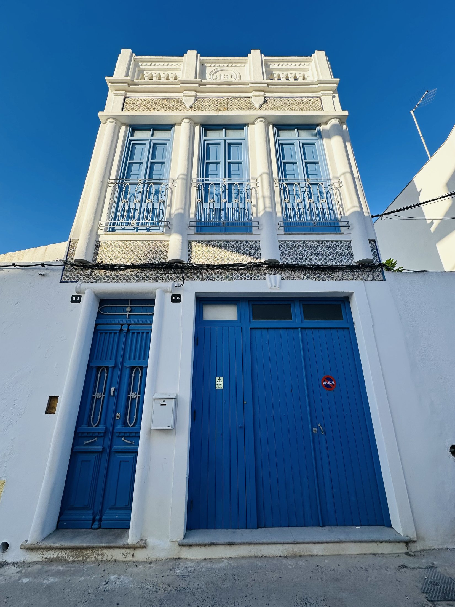
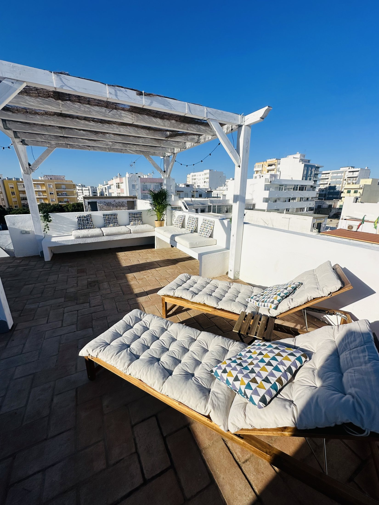
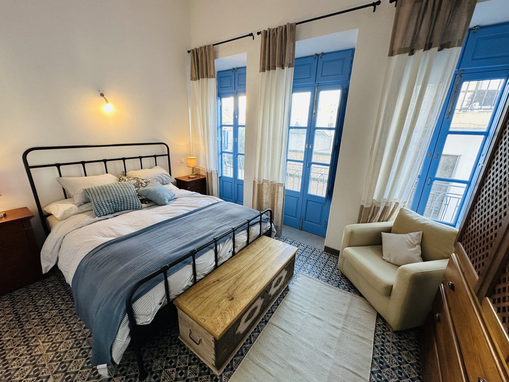
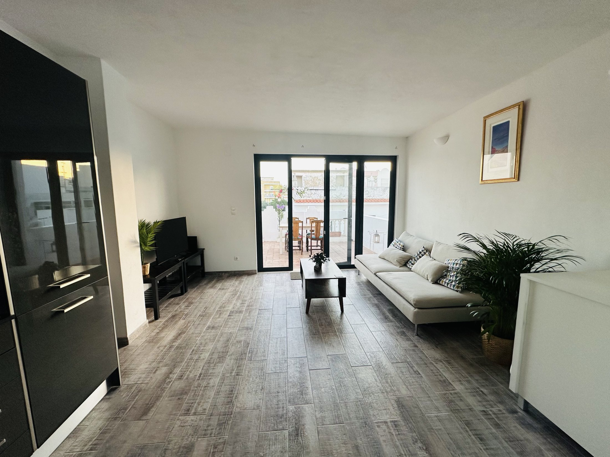
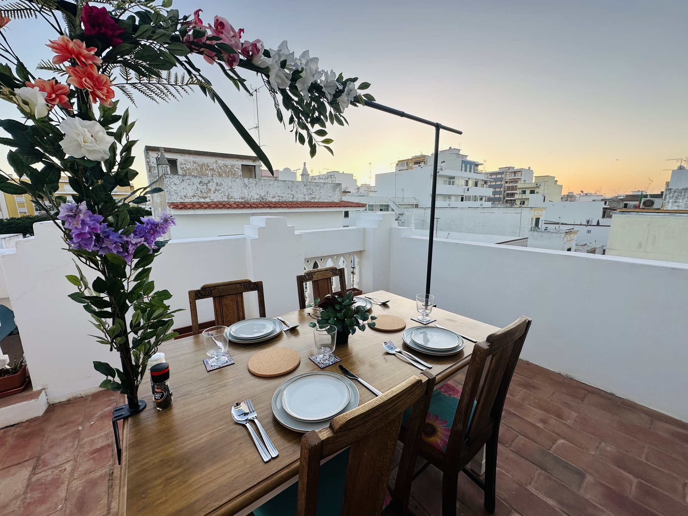
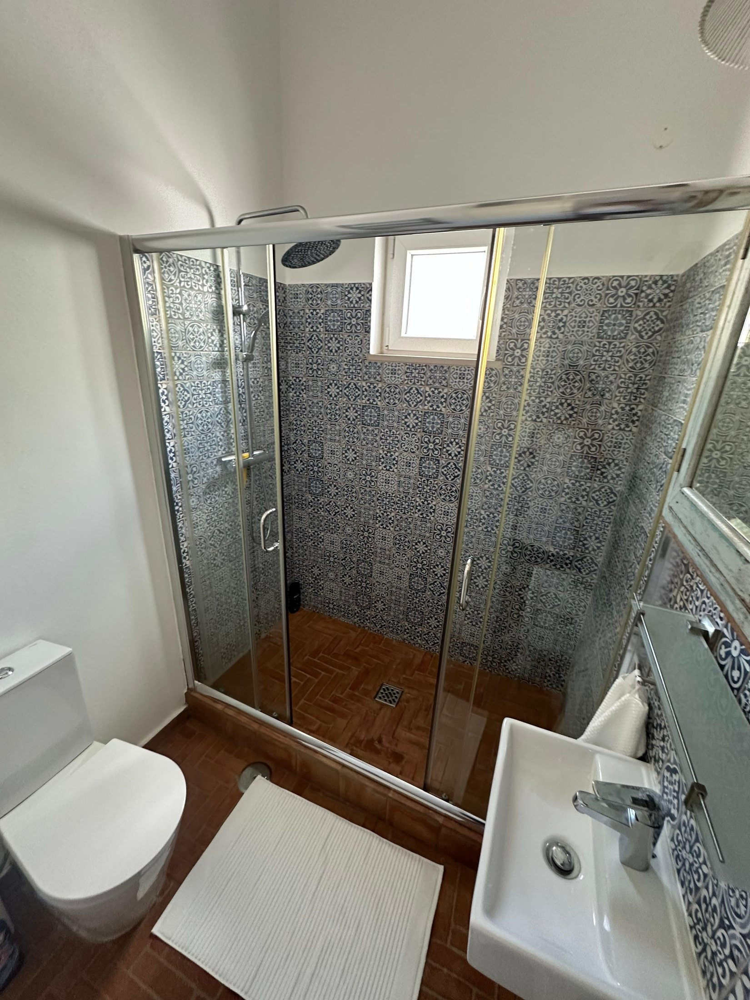
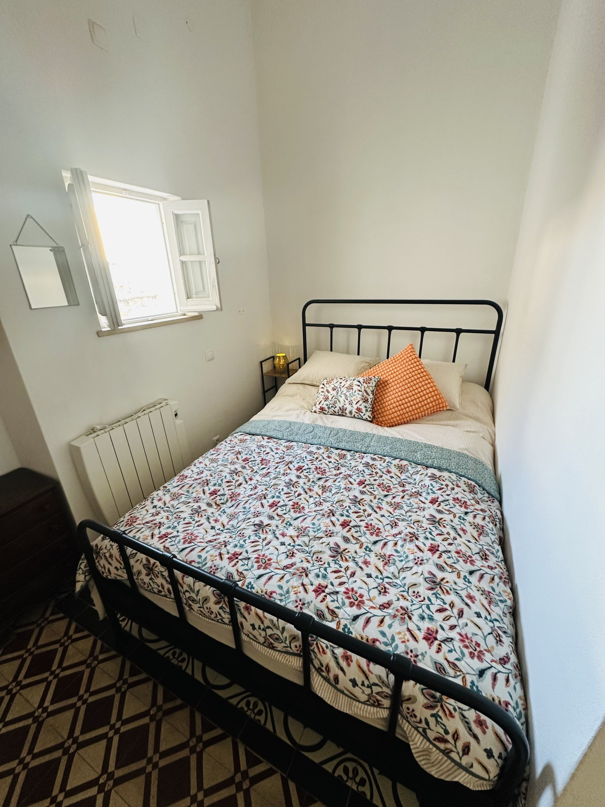
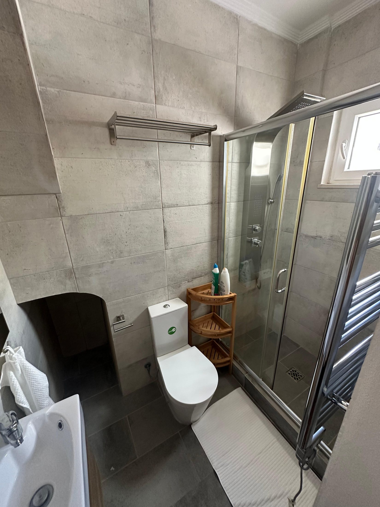
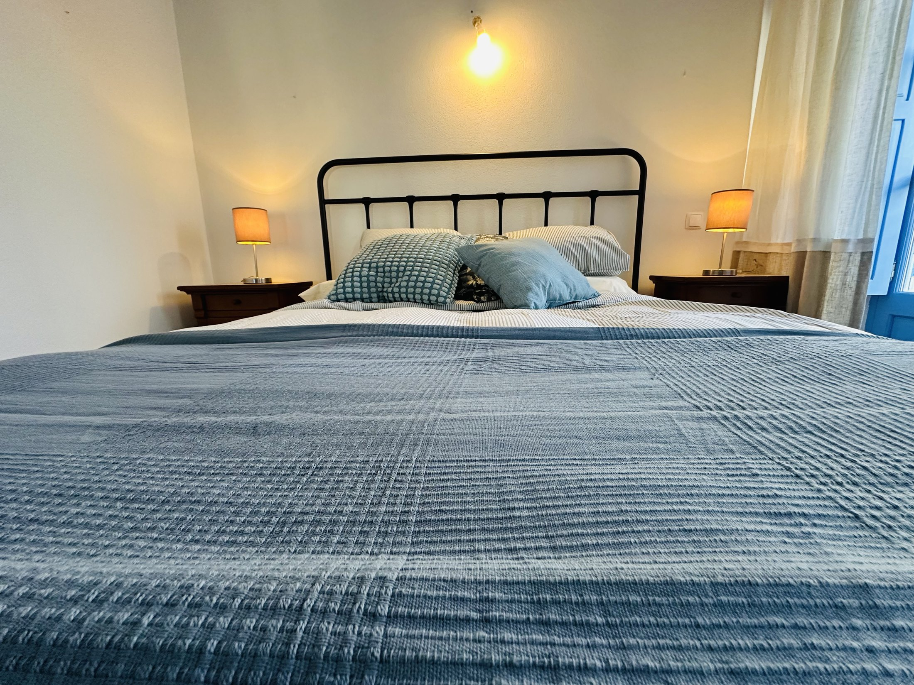
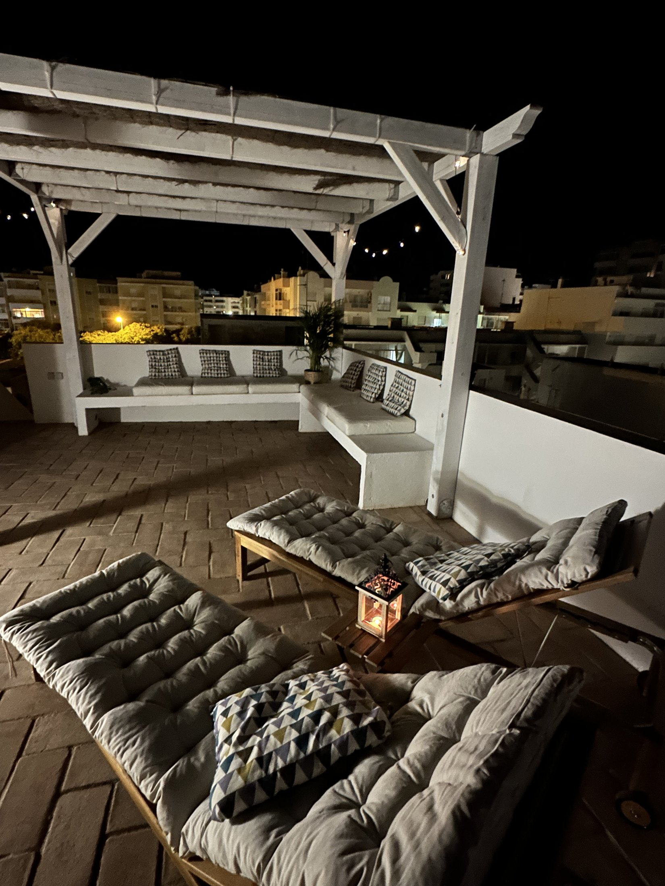
We fell in love with Olhão for its light, its tiled streets, the markets and the feeling that life moves at a gentler pace. Casa Rei Azul is our way of sharing that feeling — a characterful home where you can settle in, explore on foot and experience the town as we do.
We hope you will arrive as a guest, feel at home behind the blue doors, and leave with a little of Olhão in your heart.
Behind the bright blue doors is a three-storey Portuguese home with traditional patterned tiles, high ceilings, two bedrooms, two bathrooms, generous living spaces and a private rooftop terrace made for long Algarve evenings.
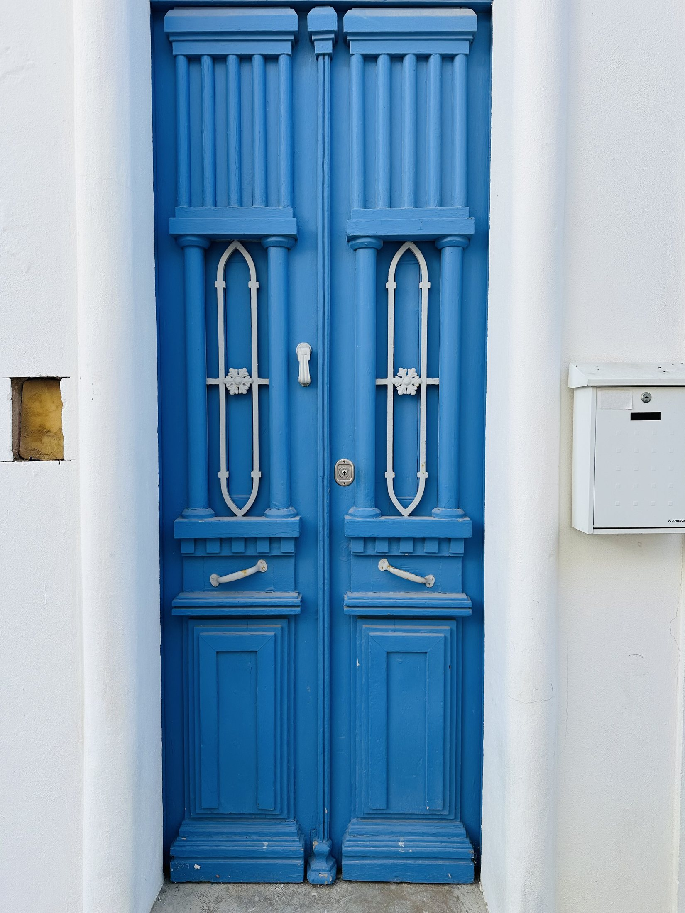
The rooftop terrace is the house’s signature space: a private open-air retreat above the city centre, with room for sun beds, relaxed drinks and outdoor dining as the light changes over Olhão.
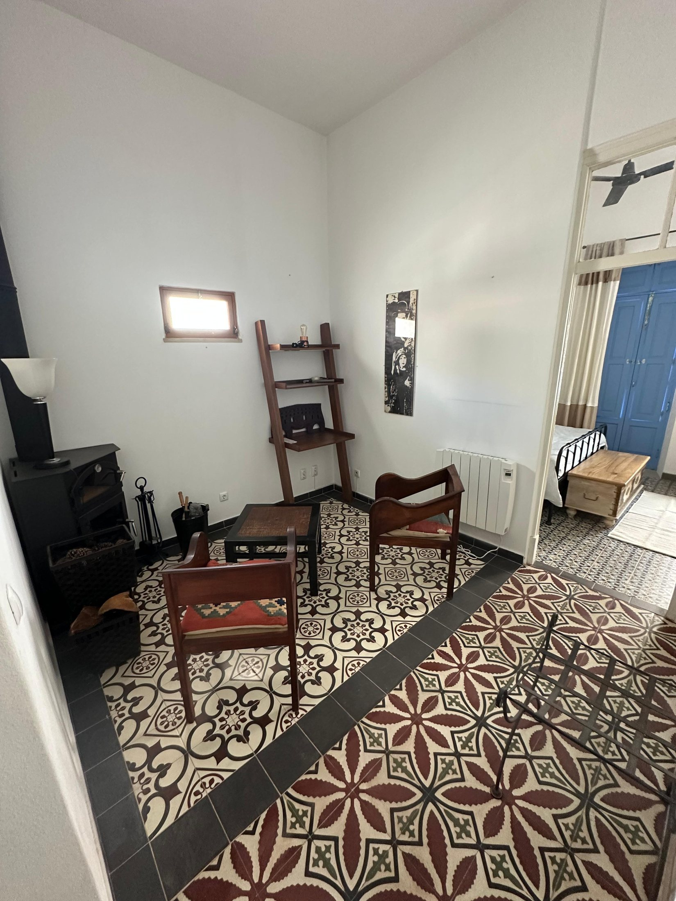
The house keeps its traditional Olhão character while adding the comforts needed for a longer stay: fast WiFi, fully equipped kitchen, two bathrooms, log burner, Smart TV and a sofa bed in the upper living space.
Restaurants, cafés, markets and the waterfront are close by, without needing a car every day.
Faro Airport is around 15 minutes away by car, making short breaks and late arrivals simple.
Two bedrooms plus sofa bed, two bathrooms and separate living areas over three floors.
Enquire for availability, rates and longer stays.